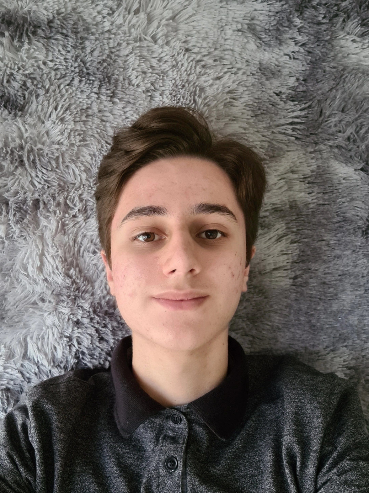

Fábio Vilas Boas
Sou estudante do ensino médio em processo de formação, também estudo no curso técnico do SENAI de DS (desenvovimento de sistemas). Iniciei o curso de DS em Janeiro de 2023, eu escolhi esse curso pois, conforme a apresentação da proposta do novo ensino médio técnico-formativo, apresentada pelo SESI, essa opção aparentou ser a mais conveniente para mim, com base nos meus futuros projetos pessoais da minha futura profissão, além disso, o mercado de trabalho por si só, ja aprasenta mais sussetividade para as pessoas com experiencia na área, oque me agregou mais prós para planejar a minha carreira profissional desejada, em conjunto com a formação no curso de desenvolvimento de sistemas. Além das formaçãoes escolares, também sou um exímio acadêmico na área de idiomas, além do português, sou aperfeiçoado no inglês, françes, espanhol e, encontro-me em processo de aperfeiçoamento do meu russo, alemão e italiano.
Hobbies

Culinaria:
Eu estou sempre procurando conhecer novos tipos de culturas, conhecimentos, técnicas e receitas na cozinha. Eu cozinho como hobby desde 2019, eu sempre gostei de visitar diversoso restaurantes e usar como inspiração parafazer minhas receitas em casa. Eu também sou apaixonada pela confeitaria.

Golf:
Uma das coisas que eu mais gosto de fazer quando eu tenho tempo livre, é jogar golfe sem hora para acabar. Além da diversão, eu utilizo o golfe cmo uma maneira de treinar a minha postura, aminha paciência e concentração. Eu gosto muito de esportes de precisão em geral, com golfe nao poderia ser diferente.

Tenis:
O meu esporte favorito, de longe, é o tenis, eu tendo ao maximo arrumar tempo para praticar o esporte, quando eu começo a jogar eu perco a noção do tempo e esqueço da fadiga que a modalidade traz. Mas, embora eu goste muito de jogar tenis, eu preciso admitir que eu nao sou lá um eximio jogador, mas eu tento ao maximo.

Literatura e Idiomas:
A minha área forte de conhecimento, é a área de linguagens,eu já atuei como redator, as minhas pontuações nos simulados das redações são todas acimas de 800. Além de um bom escritor e leitor. Estudo inglês, espanhol, francês e italiano, também venho aperfeiçoando meus conhecimentos em russo e alemão.